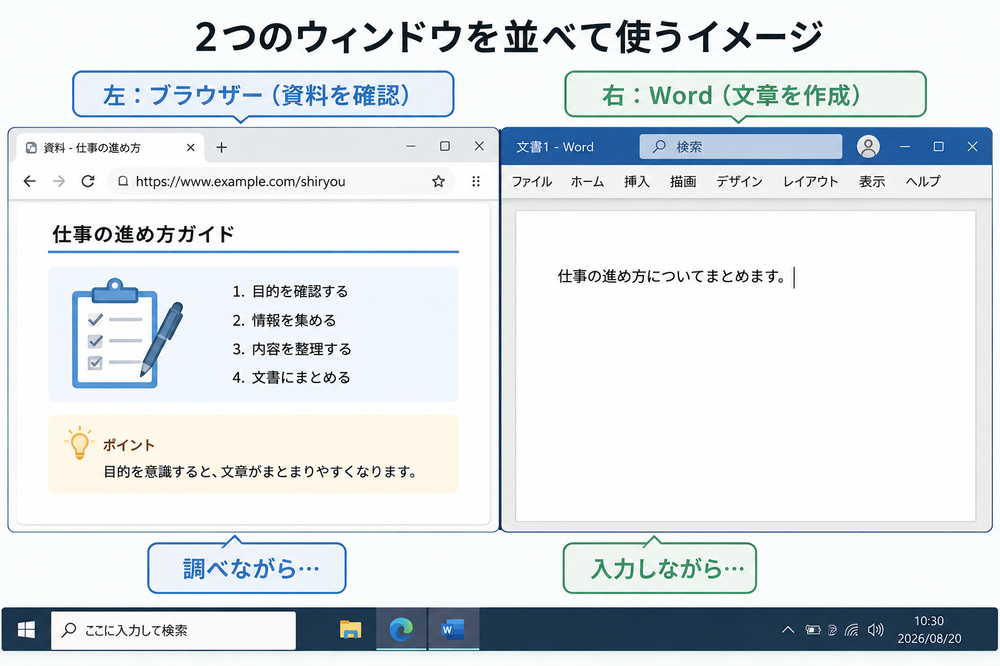

Windowsで画面を並べて作業する方法
2つのウィンドウを同時に使って、仕事をスムーズに進めよう
※この記事は主にWindows 11の画面をもとに説明しています。Windows 10でも、マウスでの操作とショートカットキー（Windowsキー ＋ 矢印）は同じように使えます。違いがある部分は本文中でお知らせします。
パソコンで仕事をしていると、「Wordで文章を作りながら、インターネットで資料を確認する」「Excelの数字を見ながら、メールを作成する」といった作業をすることがあります。
そんなとき、毎回アプリを閉じたり、タスクバーから一つずつ切り替えたりしていませんか？ 実はWindowsでは、複数のウィンドウを画面に並べて表示することができます。これは特別な機能ではなく、仕事を効率化するための基本操作です。

▲ 資料を見ながら入力を進める「並列作業」が、パソコン仕事の基本です
「ウィンドウ」って何？
WindowsでWordやExcel、Webブラウザーなどを開くと、画面の中に四角い枠が表示されます。この一つひとつの画面を、ウィンドウと呼びます。例えば、「Wordを開く」というのは、Wordのウィンドウを表示しているということです。
初心者の方に意外と多いのが、「今使っている画面を閉じないと、別の画面は使えない」と思ってしまうことです。実際には、WordもブラウザーもExcelも、すべて同時に「開きっぱなし」にしておくことができます。
ただし、開きっぱなしにしてよいのは「今の作業で使うもの」までです。使い終わったウィンドウをそのままにしていくと、タスクバーにアイコンが並びすぎて、目的の画面を探すだけで時間がかかります。パソコンの動きが重くなる原因にもなります。
教えていると、タスクバーが10個以上のアイコンでいっぱいになり、「今どれが何のファイルだったか」が自分でも分からなくなっている方に出会うことがあります。作業が終わったウィンドウは、保存してから「×」で閉じる。この習慣を、並べ方と一緒に身につけておきましょう。
タスクバー？ という言葉が分からない方のために補足しておくと、パソコンの画面の一番下にある細長い場所のことです。このようなカタカナ言葉も、気になったとき瞬間に調べてみる！という練習をすると調べる力も身についていきます。
2つのウィンドウを左右に並べる（マウス操作）
まずは、最も直感的なマウスを使った方法を覚えましょう。画面の端にウィンドウを「ぶつける」のがコツです。
- 並べたいウィンドウを開く。
- ウィンドウ上部の「タイトルバー（何もない部分）」をマウスでつかむ。
- そのまま画面の「左端」または「右端」までドラッグする。
- 画面の半分に枠が表示されたらマウスを離す。
- 反対側に表示するウィンドウが一覧で出るので、選ぶ。
ショートカットキーならもっと速い！
慣れてきたら、キーボードを使った方法にチャレンジしましょう。これが一番速くて確実です。
Windowsキー ＋ ← または →
現在使っているウィンドウが、一瞬で画面の左半分または右半分に配置されます。片方を配置すると、自動的にもう片方のウィンドウを選ぶ画面が出るため、一瞬で左右分割が完成します。
左右に並べるほかにも、次のキーを知っておくと、画面操作で止まりにくくなります。
| やりたいこと | キー操作 |
|---|---|
| 左半分・右半分に配置する | Windowsキー ＋ ← / → |
| 画面いっぱいに広げる（最大化） | Windowsキー ＋ ↑ |
| 元のサイズに戻す（もう一度押すと最小化） | Windowsキー ＋ ↓ |
| 開いている画面を切り替える | Alt ＋ Tab |
| 配置パターンを表示する（Windows 11） | Windowsキー ＋ Z |
全部を一度に覚える必要はありません。まずは Windowsキー ＋ ← / → の1つだけで十分です。
私は、まずマウスで「画面の端にぶつける」感覚をつかんでもらい、そのあとにショートカットキーを紹介します。先にキーを覚えると、うまくいかなかったときに「何が起きているのか」が分からなくなり、そこで止まってしまうからです。仕組みが目で見えてから、別のやり方に進むほうが印象に残って、知識として定着します。自分にとって、どれが一番なるほど！と思えたか が大事です。
ウィンドウの「最大化」と「元のサイズ」
ウィンドウを並べる際に迷いやすいのが、右上の3つのボタンです。これらを正しく使い分けましょう。
- 「－」最小化： 画面から消して、タスクバーの中に隠します（アプリは終了しません）。
- 「□」最大化 / 元のサイズに戻す： 画面一杯に広げるか、並べられる大きさにするかを切り替えます。
- 「×」閉じる： そのウィンドウ（アプリ）を完全に終了します。
並べようとしても、うまくいかないときは
やり方を読んで試してみても、思ったとおりにならないことがあります。初心者の方がつまずきやすい場面と、その対処をまとめます。
反対側のウィンドウを選ぶ画面が出てこない
いちばん多い原因は、並べる相手のウィンドウがまだ開いていないことです。左右に並べる機能は、すでに開いているウィンドウの中から選ぶ仕組みなので、片方しか開いていないと選択肢が出ません。先に2つとも開いてから並べましょう。
2つ開いているのに出ない場合は、「設定」→「システム」→「マルチタスク」を開き、ウィンドウのスナップに関する項目がオンになっているか確認します（項目名はWindowsのバージョンで少し異なります）。
片側だけ寄って、反対側が空いたままになった
一覧が出たときに何も選ばずに閉じてしまうと、この状態になります。慌てなくて大丈夫です。もう片方のウィンドウをタスクバーから選び、Windowsキー ＋ 反対向きの矢印を押せば並びます。やり直したいときは、右上の「□」ボタンで元のサイズに戻せます。
並べたら文字が小さい、Wordの表示が切れる
画面を半分にすると、Excelでは見える列が減り、Wordでは上のリボンが一部省略されて表示されます。これは故障ではなく、幅が半分になったための自然な表示です。ウィンドウの中の倍率を調整しましょう。WordやExcelは画面右下のスライダー、ブラウザーは Ctrl を押しながらマウスのホイールを回すと、大きさを変えられます。
そもそも並べられない
ブラウザーで F11 キーを押して全画面表示にしていたり、動画を全画面で再生していたりすると、並べられません。Esc キーか F11 キーで全画面を解除してから、もう一度試してください。
仕事が楽になる「並び」の組み合わせ
2つの画面を並べると、視線の移動だけで仕事が進みます。代表的な活用例です。
- 左：ブラウザー ＋ 右：Word： ネットの情報を参考に、自分の言葉で文章を作成する。
- 左：Excel ＋ 右：Word： 表の中の数字を確認しながら、正確な案内文や報告書を作る。
- 左：PDF資料 ＋ 右：メール： 添付された資料の中身を見ながら、返信メールを書く。
初心者のうちは「別の画面を見るときは、今の画面を小さくする（最小化）」という操作を繰り返しがちです。しかし、仕事では「必要な画面を並べて置いておく」という発想を持つだけで、思考が途切れず、ミスのない作業ができるようになります。ここで大切なことは、一つのウィンドウで操作するだけじゃなく、複数使えるという目線を持つことです。こういうことできたらいいのになぁというもっと便利にしたい。と思えること。いま行っていることが、ベストではないかも？という発想を持ってください。それがパソコンを使える人への近道です。
並べたあとに使いたい3つの操作
画面を並べただけでは、まだ半分です。並べた状態で作業を進める方法も覚えておきましょう。
- コピー＆貼り付けで移す： 左の資料の文字を選び、Ctrl ＋ C でコピー、右の文書で Ctrl ＋ V で貼り付けます。画面を切り替える必要がないので、数字の写し間違いが減ります。
- 境目をドラッグして幅を変える： 左右の画面の境目にマウスを合わせて動かすと、両方の幅が同時に変わります。「今はExcelを広く見たい」というときに便利です。
- 3つ目は Alt ＋ Tab で呼び出す： 3つ目の画面が必要になったら、並べずに切り替えて使います。
画面が広いと、3つも4つも並べたくなります。しかし並べる数が増えるほど、それぞれの画面が小さくなり、文字が読みにくくなります。特にノートパソコンでは、2つまでにしておくほうが見間違いが少なく、結果的に作業が速く終わります。3つ目が必要なら、並べるのではなく切り替えて使いましょう。
なお、資料の文章を貼り付けて文書を作る場合は、そのまま使うのではなく、必ず自分の言葉に直しましょう。並べて作業できるのは「見ながら書く」ためで、「そのまま写す」ためではありません。
初心者の方がやりがちな失敗
操作そのものより、使い方でつまずく場面が実際には多くあります。
入力したい側をクリックしないで打ってしまう
画面を左右に並べると、「どちらの画面に文字が入るのか」が分かりにくくなります。キーボードの入力は、最後にクリックしたウィンドウに入ります。並べた直後は、必ず入力したい側を一度クリックしてから打ち始めましょう。「気づいたら反対側のウィンドウに打っていた」という失敗は、初心者の方によくあります。
慌てて「×」を押してしまう
並べた画面を整理しようとして、最小化の「－」のつもりで「×」を押してしまうことがあります。Wordなどでは保存の確認が出ますが、ブラウザーでは、入力途中の内容が消えてしまう場合もあります。ボタンを押す前に、「－」と「×」のどちらを押そうとしているか、一呼吸おいて確認する習慣をつけましょう。
Windows 11なら「スナップレイアウト」も活用
Windows 11では、ウィンドウ右上の「□（最大化）」ボタンにマウスをそっと重ねるだけで、複数の配置パターン（2分割、3分割、左右非対称など）が表示されます。使いたい場所をクリックするだけでピタッと配置できるので、非常に便利です。
Windows 10にはこの機能はありませんが、画面の端にドラッグする方法とキー操作は使えます。また、ノートパソコンなど画面が小さい場合は、表示される配置パターンが少なくなることがあります。
よくある質問
3つや4つに分けて並べることはできますか？
ウィンドウを画面の四隅にドラッグすると、4分割で並べられます。ただし大きなモニターでないと見づらいため、ノートパソコンでは2つまでをおすすめします。
ノートパソコン1台でも、並べて作業できますか？
できます。外付けモニターがなくても、画面を左右に分けて使えます。文字が小さく感じたら、倍率を調整してください。
まとめ：まずは「2つ」を並べてみよう
Windowsは1つの画面だけを使い続ける必要はありません。今回覚えた以下の点を今日から試してみてください。
- ウィンドウは左右に並べて使える
- Windowsキー＋←／→のショートカットが便利
- 「何を見ながら作業するか」を考えて配置を決める
- 並べたら、入力したい側をクリックしてから打ち始める
- 並べるのは2つまで。3つ目は Alt ＋ Tab で切り替える
まずは「Wordとブラウザー」の2つを並べることから始めてみましょう。画面を行き来するストレスがなくなり、パソコンを使うのがもっと楽しく、快適になるはずです。